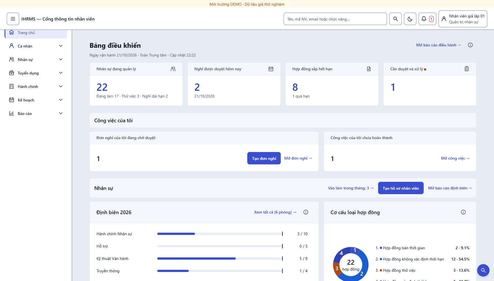
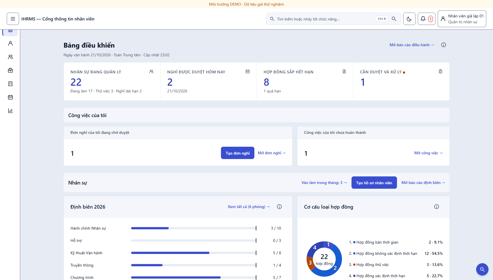
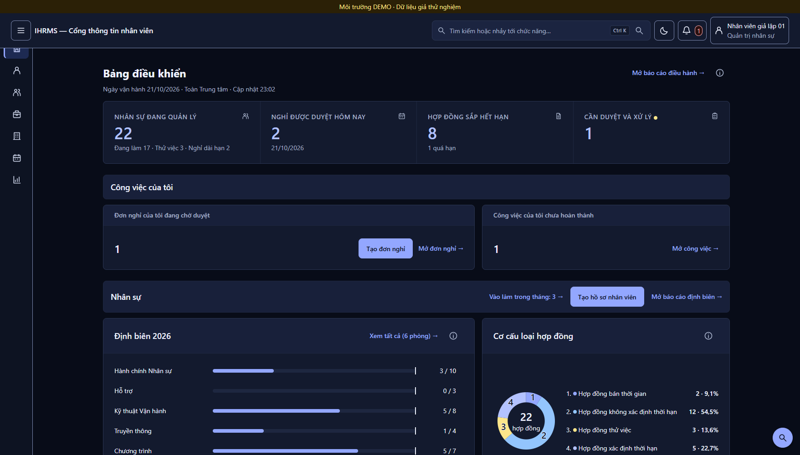
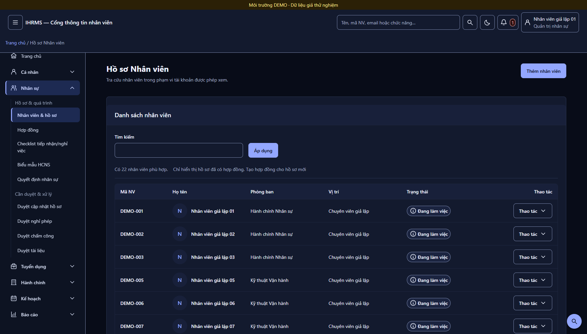
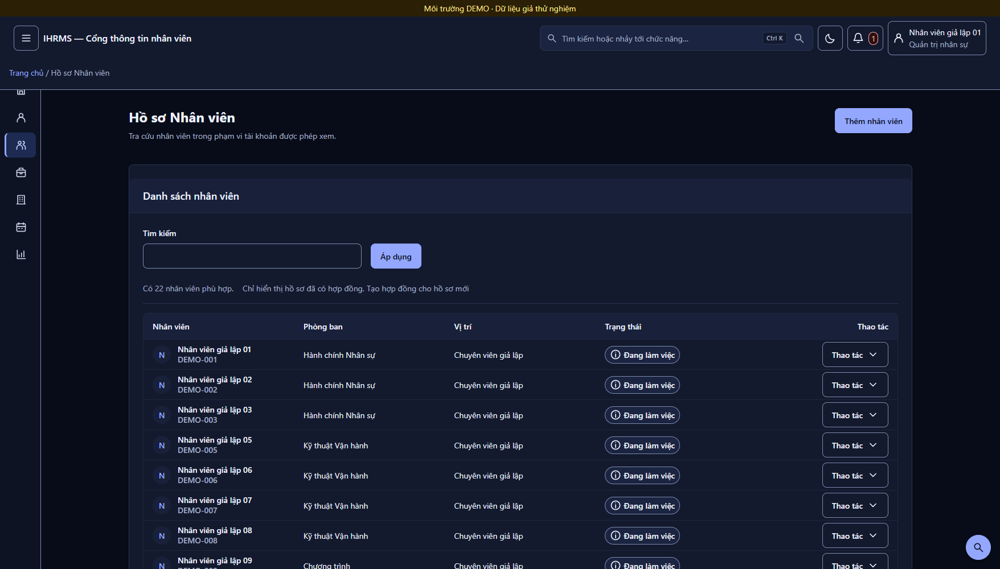

Đã vào mã: rail 72px, command bar, KPI một dải, bảng 53px
Bốn thay đổi bố cục theo đúng hai ảnh bạn gửi. Toàn bộ đo trên ứng dụng thật ở 1756×1000, không dùng ảnh mockup. Phần còn lại của B (cột Loại hợp đồng/Ngày vào, lưới 8/4, dải số liệu đáy, tab trạng thái, form hai cột) chưa làm — ghi rõ ở mục 04.
72px / 256px
Rail thay sidebar. Nút mở rộng vẫn còn, lựa chọn được ghi nhớ.
53px / 69px
Chiều cao hàng bảng. Nút thao tác vẫn 44px nên chuẩn chạm không đổi.
1 dải KPI
Bốn ô trong một thẻ, ngăn bằng đường kẻ dọc, thay bốn thẻ rời.
Bảng điều khiển — trước và sau


Ctrl K trong ô tìm kiếm.
--ui-divider nên không bị viền kép.Danh sách nhân viên — trước và sau



Đã đổi những gì
| Hạng mục | Thay đổi | Tệp |
|---|---|---|
| Rail 72px | Desktop vào thẳng rail; localStorage !== 'false' nên chỉ khi người dùng chủ động mở rộng mới giữ sidebar. Bấm một nhóm trong rail tự mở rộng rồi mở panel. | app_shell.js |
| Command bar | Icon dẫn + chip Ctrl K + nút gửi trong cùng ô; Ctrl/⌘+K đưa tiêu điểm vào ô. Giữ nguyên id, form GET nên các cổng search cũ vẫn chạy. | base.html, app_shell.js, app_shell.css |
| KPI một dải | .home-main-kpis thành một thẻ, gap:0, các ô ngăn bằng border-inline-start; label chữ hoa 14px, số 36px. Giữ nguyên hook cũ để cổng đo còn dùng. | home_dashboard.css |
| Mật độ bảng | Đệm dọc ô 4px + tbody tr{block-size:3.25rem}; avatar 32px; gộp mã NV vào cột Nhân viên; cập nhật colgroup và min-width. | components.css, atoms_ui.css, hr_employee_list.html, shared_components.css |
Còn lại của B
| Hạng mục | Trạng thái | Vì sao chưa làm |
|---|---|---|
| Rail 72px, command bar, KPI một dải, mật độ 52–56px | Xong | — |
| Cột “Loại hợp đồng”, “Ngày vào” trong danh sách | Chờ | Cần bổ sung dữ liệu ở view (join hợp đồng), không phải việc CSS |
| Lưới 8/4 + cột phải “Lịch hôm nay / Dự án đang chạy” | Chờ | Phải chọn lại nhóm nội dung nào sang cột phải theo từng vai trò |
| Dải số liệu thứ hai ở đáy bảng điều khiển | Chờ | Cần 5 chỉ số tổng hợp chưa có trong snapshot |
| Tab trạng thái thay một phần bộ lọc, toolbar dính | Cần duyệt | Lệch quy chuẩn dải lọc đã ký 13/10 |
| Form hai cột + rail ngữ cảnh | Cần duyệt | Ngoại lệ riêng, chưa có quyết định |
Cổng kiểm thử đã chạy
| Cổng | Kết quả |
|---|---|
run_layout_alignment_audit.py | 150 route / 6.881 ca / 0 vi phạm / 0 lỗi — 9 tài khoản × 1920/1756/1440/1280/1024/768/390 × sáng/tối. Chạy hai lượt: sau đổi CSS và sau khi sửa template danh sách. |
run_browser_uat.py --layout-only | 128 checks, 32 ảnh, 0 lỗi, DB dùng một lần tự hủy. |
run_dashboard_layout_uat.py | 4.572 checks, 48 ảnh. Đạt: padding, cardGap, noShadow, kpiHeights, first fold, targets, rows. |
| Test đơn vị | 35 test OK (tests_mobile, test_layout_audit_tools, test_home_dashboard). |
Một thay đổi hợp đồng cổng, có ghi lý do: cardGap trong run_dashboard_layout_uat.py tách .home-main-kpis ra khỏi nhịp 16px và yêu cầu gap = 0, vì dải KPI là một thẻ có đường ngăn. Không thêm waiver nào.
Lỗi có sẵn trên main, không do đợt này: cổng báo groupGap và type. Đo được: .home-dashboard đặt gap 24px trong khi cổng đòi 32px; --ui-text-kpi là 36px (đã vậy từ 61a9380) trong khi cổng đòi 32px. Cần bạn chọn 24 hay 32 trước khi sửa cổng hoặc sửa token.